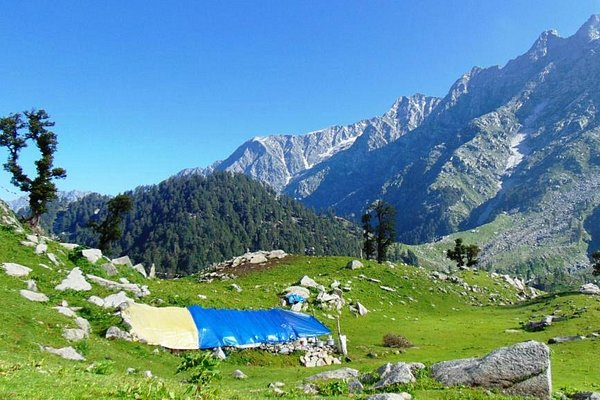

堪布拉山谷
坎格拉谷是喜馬拉雅山脈西部的一個山谷。它位於印度喜馬偕爾邦，是一個受歡迎的旅遊目的地。那裡說康日方言。 Dharamshala 是 Kangra 區和山谷主要城
市的所在地，位於 Dhauladhar 的南部分支（側山脊）。
歷史事件
1905 年 4 月 4 日早上 6 點 19 分，這個山谷經歷了一場毀滅性的 7.8 級地震，導致康格拉地區大約 19,800 人死亡，數千人受傷。 Kangra、McLeodganj
和 Dharamshala 鎮的大部分建築物被毀。 Jawaramukhi 的 Theda Mandir 也是 1905 年地震的受害者。
地理
山谷有許多常年溪流滋潤著山谷，比斯河從中流過。這個山谷的平均海拔是 2,000 英尺。 Kangra 山谷是一個罷工山谷，從 Dhauladhar 山脈的山腳下延伸
到比斯河以南。白山是 Dhauladhar 山脈的最高峰，標誌著山谷和 Chamba 之間的邊界，海拔 4,863 米（15,956 英尺）。該山脈的頂峰從底部陡峭地上升，高
出谷底約 13,000 英尺（4,000 米），中間沒有低矮的山丘。
旅遊
達蘭薩拉是山谷的主要城鎮和該地區的首府，是喜馬偕爾邦和印度遊客最多的山地車站之一。它也是 Dhauladhar 山脈中數次喜馬拉雅徒步旅行的基地，包括印
度最著名的徒步旅行之一 Tri-Wound。 McLeod Ganj是達賴喇嘛的現居地，也是印度流亡藏人社區的中心，吸引了世界各地的遊客。 Parampur 和
Dharamshala也因其種植 Kangra 茶的茶園而聞名。比爾以冒險運動而聞名，尤其是滑翔傘運動。